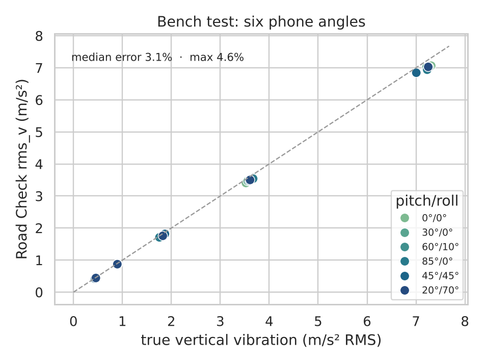

Road Check
How rough is the road? Ride it and find out.
Accelerometer · GPSv0.2.020 m stretchesWorks offlineExperimental
A phone web app that logs how rough the road is while you ride a motorbike, scooter, bicycle or car. It turns the phone's shake into a roughness score for every 20 m of road, marks sharp bumps, and colours the route on a map. One ZIP holds everything, including a ready brief for an LLM to look up road types, surfaces and speed breakers and make a report poster.
Ride first, data second. Set the app up while you are stopped, then don't touch the phone on the move. Use a proper handlebar mount, never a hand.
On the ride
01
Open once online
Open the app with internet once. It then works with no network, and can be added to the home screen.
02
Save the map
At home on wifi, tap “Save the map around me” for about 1.5 km of street map to use offline.
03
Pick vehicle & mount
Choose the vehicle and where the phone sits. A handlebar mount gives the cleanest data; a pocket adds your own movement.
04
Start ride
Allow location and motion. Wait for “logging” and a GPS figure of ±10 m or better.
05
Dim screen
A locked phone stops the sensors, so the screen stays on but goes black and ignores touches. Hold the ring 2 s to wake it.
06
End ride
Tap End twice. The summary shows distance, share of each road class, and the roughest stretches.
07
Export ZIP
GeoJSON and CSV for QGIS, the raw readings, datapackage.json and PROMPT.md.
08
Ask an LLM
Tap “Copy LLM prompt”, or hand over the ZIP. The brief asks for a road-type analysis and a report poster.
How it scores the road
| Step | What happens |
|---|---|
| Vertical shake | The phone's acceleration is projected on a slowly averaged gravity direction, so the phone can sit at any angle. |
| 20 m stretches | The ride is cut by distance, not time, interpolated between GPS fixes. Each stretch gets rms_v, peak_v, bumps, speed and curve. |
| Speed-adjusted index | rms_v × (30 km/h ÷ speed). Classes: smooth < 1.0 · fair < 2.0 · rough < 3.5 · very rough. |
| No guessing | Below 10 km/h, under 20 readings a second, or with weak GPS, a stretch is left unscored (empty, never 0). Standing still is trimmed. |
| Sharp bumps | Peaks over 4 m/s², merged within 0.25 s, saved as points. |
Raw readings are kept in 10 s chunks on the phone, either all of them or a rolling window of the last 5 or 30 minutes plus ±2 s around every bump. Nothing leaves the phone until you export.
Validation
169
Automated tests pass
Checks on the maths and in a real browser, including a full ride with the network switched off.
±5%
Any phone angle
Against known vibration, with the phone tilted six ways, readings stay within 5%.
3
Field rides
Validated in rural Bengal and Mumbai. Rides in Delhi–Noida are going on.

Who it helps
| Road policy makers & PWD / PMGSY engineers | A cheap, repeatable roughness map to rank repairs and check new roads after handover. |
| Municipalities & panchayats | Evidence for budget asks, ward by ward or village by village. |
| Researchers | Open, explained data for road, transport and rural-access studies. |
| Riders & citizens | Rough stretches and speed breakers mapped from an everyday phone. |
In the ZIP
Every 20 m stretch carries
index class rms_v peak_v rms_lateral bumps speed_kmh heading_deg curve_radius_gps_m curve_radius_gyro_m rate_hz gps_acc_max_m flags
Files
data/*_segments.geojson data/*_segments.csv data/*_bumps.geojson raw/*_raw.csv ride.json datapackage.json PROMPT.md README.txt
The LLM brief asks for
OSM road type & surface speed breakers rain ranked stretches report poster
Scan to open on a phone. Works on Android Chrome; on iPhone, Safari asks for motion permission when you start.
Made by Somdeep Kundu with ❤️ at RuDRA Lab, C-TARA, IIT Bombay · Built on the phone-field-sensors skill · MIT License